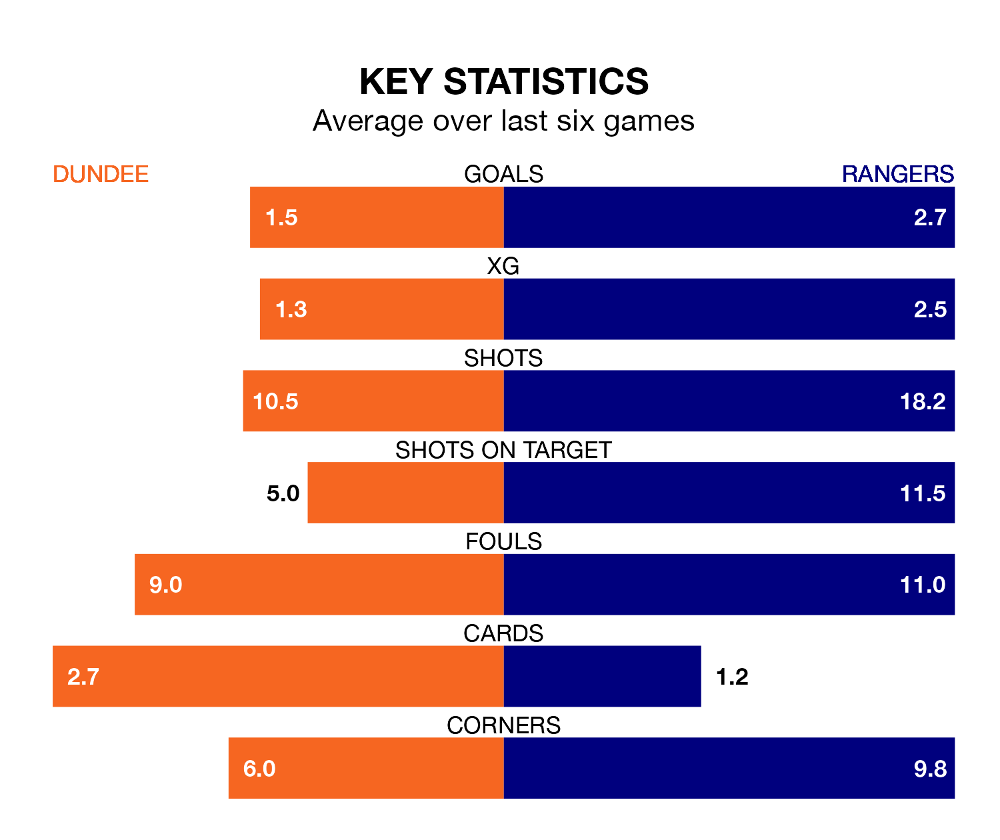

Rangers travel to Kilmac Stadium at Dens Park for Sunday lunchtime's match against Dundee looking to bounce back from defeat last time out in the Premiership.
Rangers, who sit top of the league after 29 games, fell to a 2-1 home defeat to Motherwell on March 2.
They face a Dundee side who picked up a win in their last match, a 1-0 victory against Aberdeen, and who sit sixth in the table.
With 64 goals in 29 games so far this season, Rangers are the league's second-highest scorers with 2.2 goals per game. And they are conceding fewer than average, letting in 16 goals at a rate of 0.6 per game.
Dundee are also above average scorers, with 1.4 goals per game, compared to a league average of 1.3. They have conceded 1.7 goals per game.
With Jack Butland between the sticks, the away team can rely on one of the league's safest pair of hands. He has kept 17 clean sheets in his 29 appearances this season, and no 'keeper has prevented the opposition scoring more often in the Premiership.
In the Dees's net, Trevor Carson has eight clean sheets in 25 games. He has conceded a goal every 56 minutes, three times as often as the 163 minutes between goals for Butland.
In the last 10 years, Dundee and Rangers have played each other on 16 occasions. Dundee won two of them, Rangers 13, and they drew once.
On average, the Dees scored 0.6 goals and Rangers 2.5 in those matches.
Their last meeting was on December 9, when Rangers won 3-1 at home.
The hosts are in mixed form in the Premiership, with three wins and a draw from their last six games.
With five wins and one loss over that period, Rangers's form is better – they have taken 15 points from 18, compared to Dundee's 10.
Sunday's match will be refereed by Don Robertson, who has taken charge of 13 Premiership games so far this season, issuing four red cards and booking 45 players. He has awarded four penalties.
The last Dundee game Robertson refereed was a 3-0 home loss to Celtic on December 26. His last Rangers match was their 2-1 win at home against Aberdeen on February 6.
Updated: 15:10 (UTC), 15/03/24